Explore Istanbul
A Brief History
Istanbul, formerly Byzantium and Constantinople, served as capital of the Roman Byzantine and Ottoman empires. The Hagia Sophia, Topkapı Palace, and Theodosian walls record those periods. The city controlled trade between the Black Sea and Mediterranean. It ceased to be Ottoman capital in 1923 when Ankara became the seat of the Turkish Republic. Historic areas on both sides of the Bosphorus hold mosques, bazaars, and synagogues.
Attractions Map
Top Sights & Activities
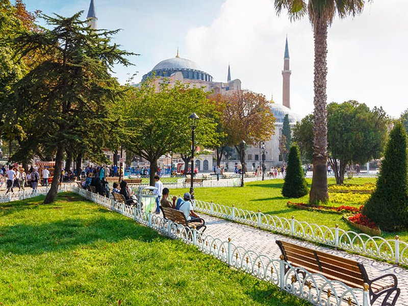
The Blue Mosque
The Sultan Ahmed Mosque, popularly known as the Blue Mosque, is an Ottoman-era historical imperial mosque located in Istanbul, Turkey. It was constructed between 1609 and 1617 during the rule of Ahmed I. It attracts a large number of tourists and is one of the most iconic and popular monuments of Ottoman architecture.
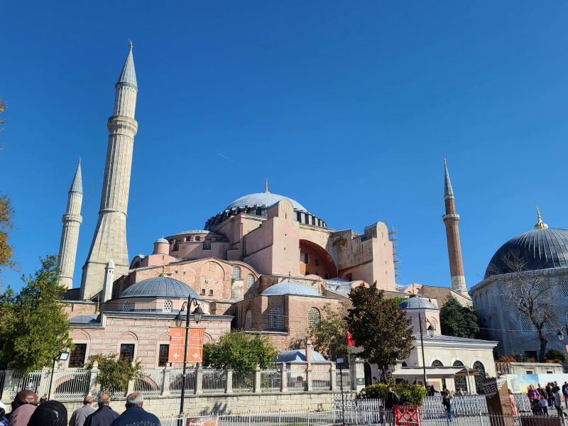
Hagia Sophia
Hagia Sophia, officially the Hagia Sophia Grand Mosque, is a mosque and a major cultural and historical site in Istanbul, Turkey. It was formerly a church and a museum. The last of three church buildings to be successively erected on the site by the Eastern Roman Empire, it was completed in AD 537, becoming the world's largest interior space and among the first to employ a fully pendentive dome.
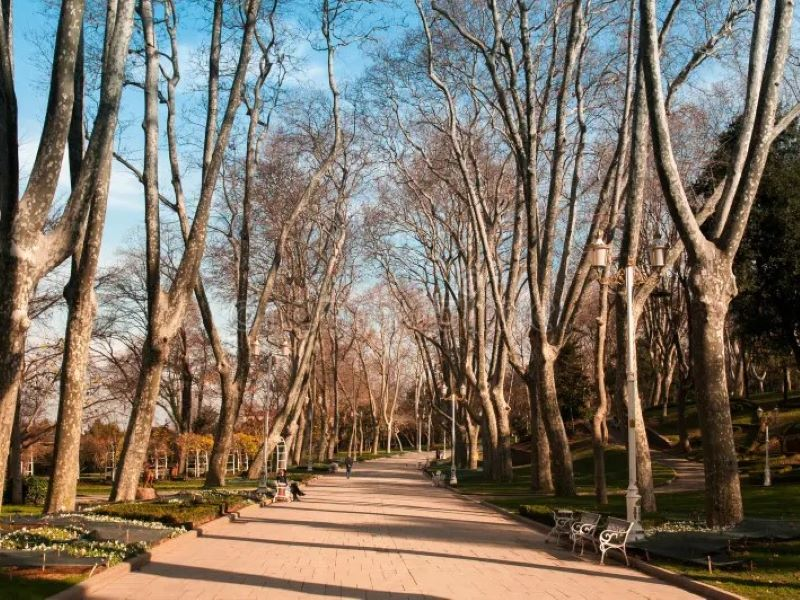
Gulhane Park
Gülhane Park is a historical urban park in the Fatih district of Istanbul, Turkey; it covers an area of 9.7 ha, is adjacent to and on the grounds of the Topkapı Palace. The south entrance of the park sports one of the larger gates of the palace. It is the oldest and one of the most expansive public parks in Istanbul.
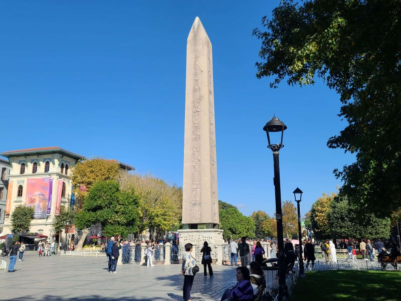
Topkapi Palace Museum
The Topkapı Palace or the Seraglio, is a large museum and library in the east of the Fatih district of Istanbul in Turkey. From the 1460s to the completion of Dolmabahçe Palace in 1853, it served as the administrative center of the Ottoman Empire, and was the main residence of its sultans. Construction, ordered by the Sultan Mehmed the Conqueror, began in 1459, six years after the conquest of Constantinople.
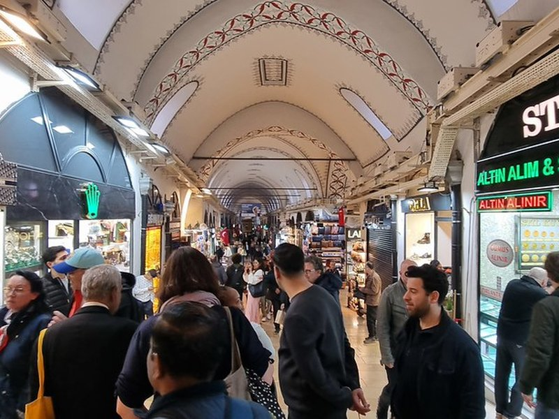
Grand Bazaar
The Grand Bazaar in Istanbul is one of the largest and oldest covered markets in the world, with 61 covered streets and over 4,000 shops on a total area of 30,700 m2, attracting between 250,000 and 400,000 visitors daily. In 2014, it was listed No.1 among the world's most-visited tourist attractions with 91,250,000 annual visitors. The Grand Bazaar in Istanbul is often regarded as one of the first shopping malls of the world.
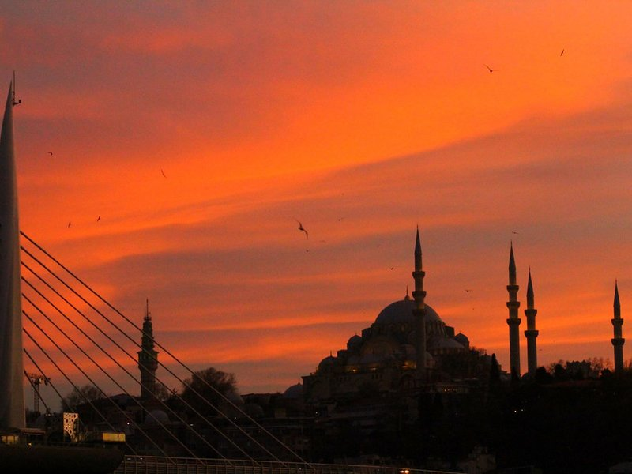
Süleymaniye Mosque
The Süleymaniye Mosque is an Ottoman imperial mosque located on the Third Hill of Istanbul, Turkey. The mosque was commissioned by Suleiman the Magnificent and designed by the imperial architect Mimar Sinan. An inscription specifies the foundation date as 1550 and the inauguration date as 1557, although work on the complex probably continued for a few years after this.
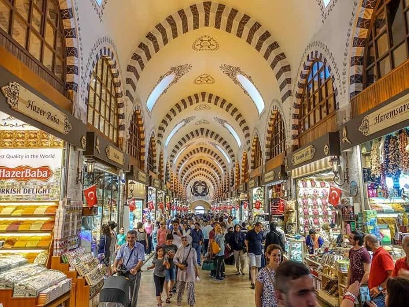
Egyptian Bazaar
The Spice Bazaar in Istanbul, Turkey, is one of the largest bazaars in the city. Located in the Eminönü quarter of the Fatih district, it is the most famous covered shopping complex after the Grand Bazaar.
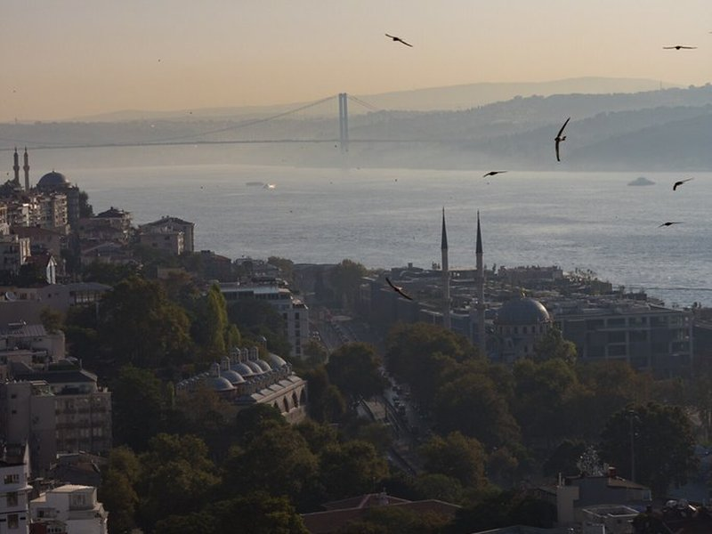
Galata Bridge
The Galata Bridge is a bridge that spans the Golden Horn in Istanbul, Turkey. From the end of the 19th century in particular, the bridge has featured in Turkish literature, theater, poetry and novels. The current Galata Bridge is just the latest in a series of bridges linking Eminönü in the Fatih district and Karaköy in Beyoğlu since the early 19th century.
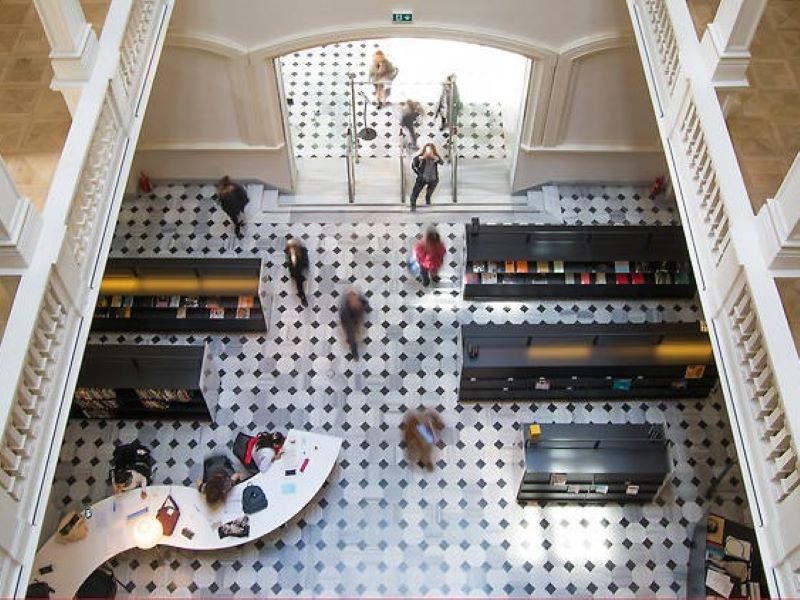
Salt Galata
SALT is a Turkish contemporary art institution. It was started by Vasif Kortun and Garanti Bank in 2011, and has exhibition and workshop spaces in Istanbul and Ankara, Turkey. It combines the previous activities of the Garanti Gallery, the Ottoman Bank Archives and Research Centre and the Platform Garanti Contemporary Art Center of the bank.
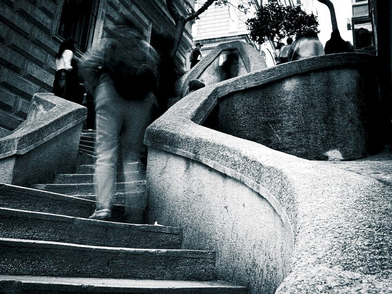
Kamondo Stairs
The Camondo Stairs are 19th century stairs on Bankalar Caddesi in the Galata quarter of the Pera district in Istanbul, Turkey. The curvaceous stairs were designed in a unique mix of the Neo-Baroque and early Art Nouveau styles, and built circa 1870–1880 by the renowned Ottoman-Venetian Jewish banker Abraham Salomon Camondo, the patriarch of the House of Camondo. The stairs link Bankalar Caddesi with Kart Çınar Sokak.
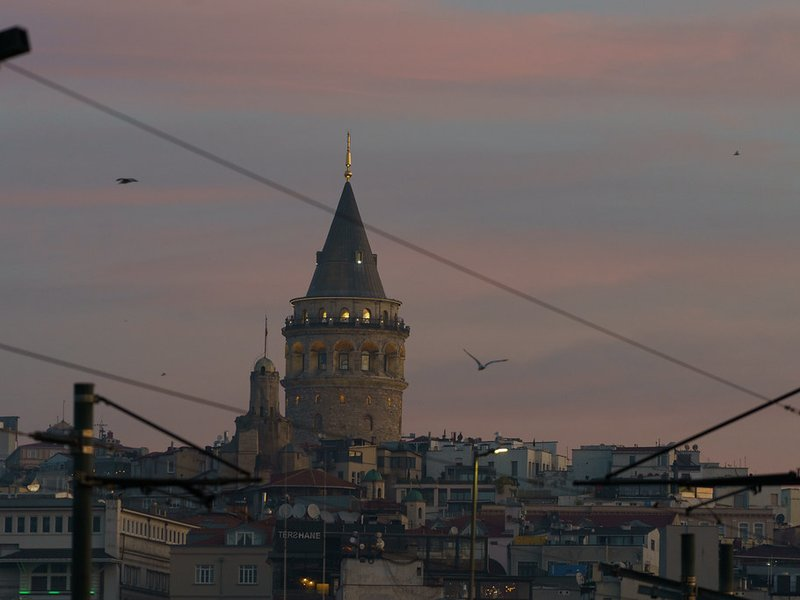
Galata Tower
The Galata Tower, officially the Galata Tower Museum, is a medieval Genoese tower in the Galata part of the Beyoğlu district of Istanbul, Turkey. Built as a watchtower at the highest point of the mostly demolished Walls of Galata, the tower is now an exhibition space and museum, and a symbol of Beyoğlu and Istanbul.
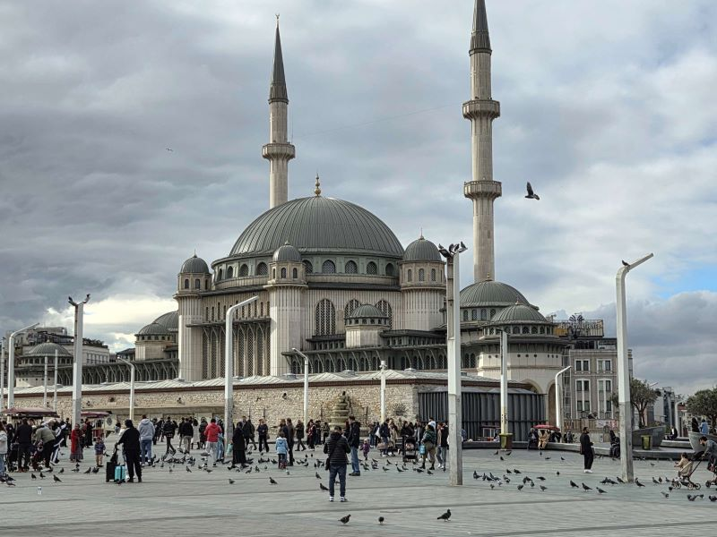
Taksim Mosque
Taksim Square, situated in Beyoğlu in the European part of Istanbul, Turkey, is a major tourist and leisure district famed for its restaurants, shops, and hotels. It is considered the heart of modern Istanbul, with the central station of the Istanbul Metro network. Taksim Square is also the location of the Republic Monument which was crafted by Pietro Canonica and inaugurated in 1928.
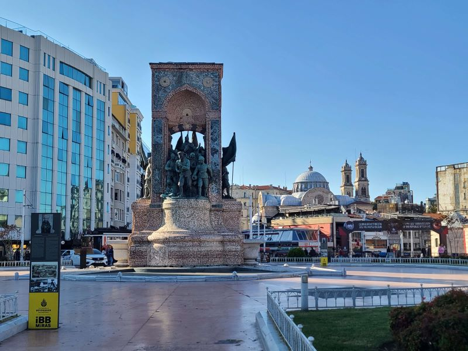
Taksim Square
Taksim Square, situated in Beyoğlu in the European part of Istanbul, Turkey, is a major tourist and leisure district famed for its restaurants, shops, and hotels. It is considered the heart of modern Istanbul, with the central station of the Istanbul Metro network. Taksim Square is also the location of the Republic Monument which was crafted by Pietro Canonica and inaugurated in 1928.
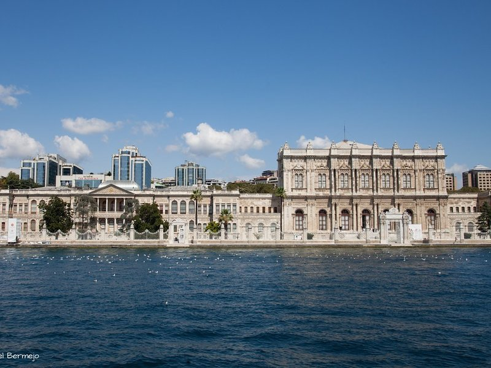
Dolmabahçe Palace
Dolmabahçe Palace is a 19th-century imperial palace located in Istanbul, Turkey, along the European shore of the Bosporus, which served as the main administrative center of the Ottoman Empire from 1853 to 1887 and from 1909 to 1922.
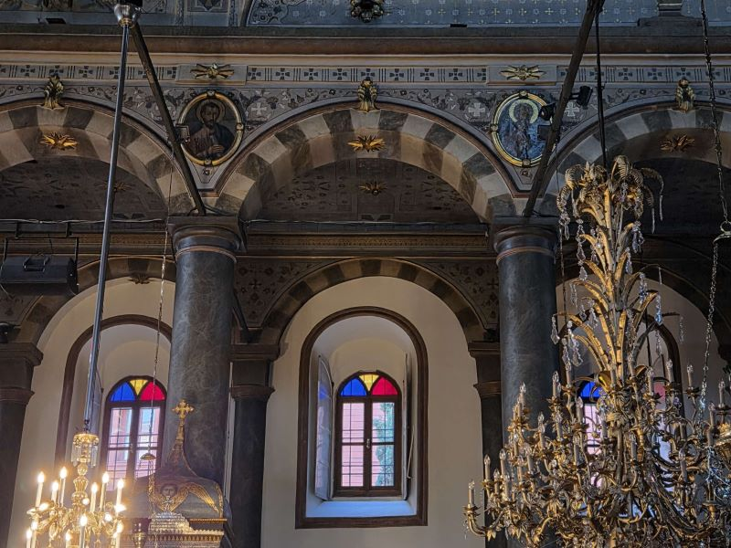
Venerable Patriarchal Church of St. George
The Armenian Apostolic Church is the autocephalous national church of Armenia. Part of Oriental Orthodoxy, it is one of the most ancient Christian churches. The Armenian Apostolic Church uses the Armenian Rite.
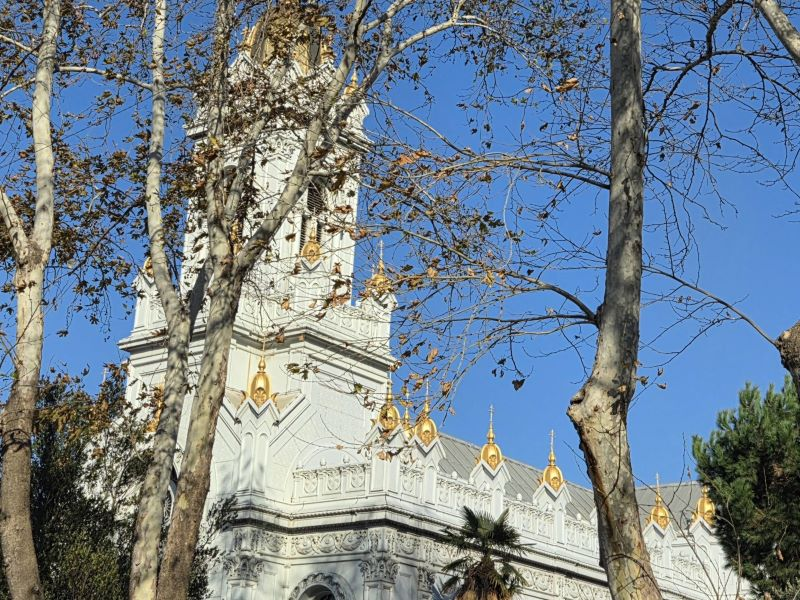
Saint Stephen's Bulgarian Orthodox Church
The Bulgarian St. Stephen Church, also known as the Bulgarian Iron Church, is a Bulgarian Orthodox church in Balat, Istanbul, Turkey. It is famous for being made of prefabricated cast iron elements in the Neo-Byzantine style.
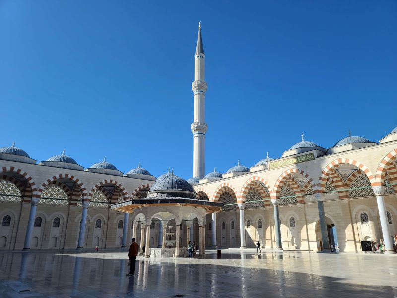
Grand Çamlıca Mosque
The Grand Çamlıca Mosque is a landmark complex for Islamic worship which was completed and opened on 7 March 2019. The mosque stands astride Çamlıca Hill in the Üsküdar district of Istanbul and is visible from much of the centre of the city. The complex incorporates an art gallery, library, and conference hall.
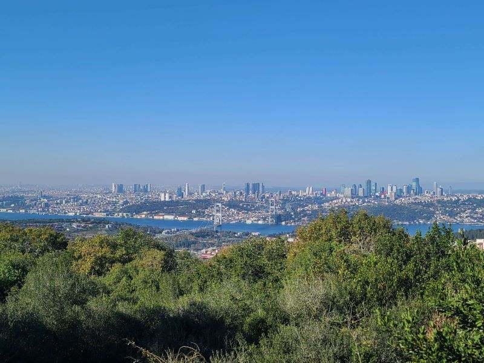
Çamlıca Hill
Çamlıca Hill, a.k.a. Big Çamlıca Hill to differentiate it from the nearby Little Çamlıca Hill, is a hill in the Üsküdar district of the Asian side of Istanbul, Turkey. At 288 m above sea level, Çamlıca Hill offers a panoramic view of the southern part of Bosphorus and the mouth of the Golden Horn.